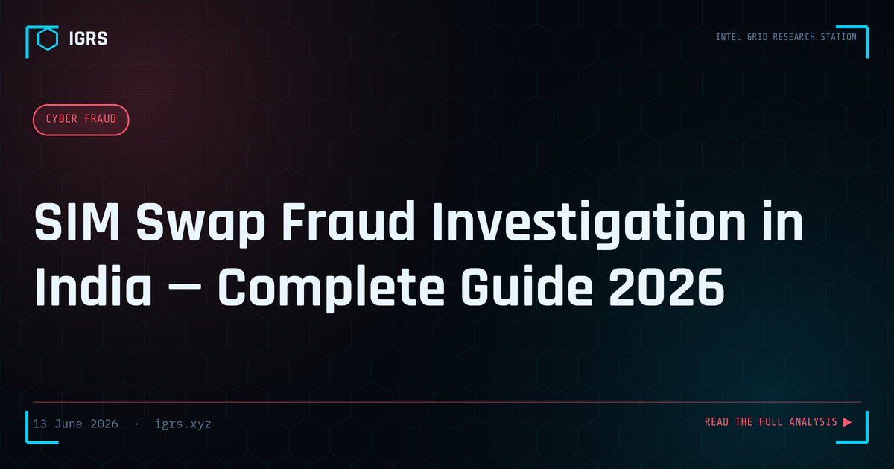

SIM Swap Fraud Investigation in India — Complete Guide 2026
What Is SIM Swap Fraud and Why It Is So Dangerous
SIM swap fraud is one of the most sophisticated and devastating forms of financial cybercrime in India. By fraudulently transferring a victim's mobile number to a SIM card they control, criminals intercept every OTP and authentication message — bypassing the two-factor authentication that protects banking, UPI, email, and social media accounts. Within minutes of a successful swap, a victim's entire digital and financial identity can be compromised. This guide explains how SIM swap fraud works, how it is investigated in India, and what victims and organisations can do.
How SIM Swap Fraud Actually Works
The attack unfolds in a methodical sequence:
- Intelligence gathering: Criminals collect the victim's personal data — name, date of birth, address, Aadhaar — through phishing, data breaches, or social engineering.
- Port or replacement request: Using forged identity documents, the fraudster approaches a telecom retailer requesting a SIM replacement or port for the victim's number.
- SIM activation: Once the new SIM is active, the victim's original SIM goes dead, and all calls and SMS route to the criminal.
- Account takeover: The criminal triggers OTP-based password resets on banking, UPI, and email, draining accounts and seizing identities.
- Victim discovery: The victim notices their SIM has stopped working — often the first and only warning sign.
Warning Signs of a SIM Swap Attack
| Sign | What It Indicates |
|---|---|
| Sudden loss of signal | Your number may have been ported to another SIM |
| No incoming calls/SMS | Traffic is routing to the criminal's SIM |
| Unexpected OTPs | Someone is attempting account resets |
| Bank alerts for unknown transactions | Account takeover in progress |
| "SIM activation" message you didn't request | An unauthorised swap has occurred |
Investigation Methodology
SIM swap investigation centres on the telecom and banking evidence trail:
- Telecom port logs: Identify who submitted the port/replacement request, when, and from which retailer location.
- Aadhaar verification logs: Determine whether the victim's Aadhaar was used and whether biometric authentication occurred.
- Retailer CCTV: Footage from the point of sale can identify the person who collected the fraudulent SIM.
- Bank transaction logs: Map all transactions following the swap to trace the money flow.
- Device fingerprints: Bank session logs reveal the device used for the fraudulent access.
The Role of TAFCOP and MNPVS
The TAFCOP portal (sancharsaathi.gov.in) lets a victim verify which connections are registered on their Aadhaar, confirming whether an unauthorised SIM was issued. For investigators, the Mobile Number Portability data and DoT records reveal the porting history and the retailer involved. Cross-referencing these establishes exactly where and how the fraudulent swap was executed.
Bank and Telecom Liability
Indian regulations place significant responsibility on banks and telecom operators in SIM swap cases. Under RBI guidelines on limited liability, if a victim reports the fraud promptly and it was not due to their negligence, the bank may bear the loss and must investigate and refund — typically within a defined window. Telecom operators face liability under consumer protection law if they issued a port or replacement on forged documents without proper verification. Operators are also required to implement a cooling-off period and verification safeguards for SIM swaps.
Applicable Legal Sections
| Section | Act | Offence |
|---|---|---|
| Section 66C | IT Act 2000 | Identity theft |
| Section 66D | IT Act 2000 | Personation using computer |
| Section 318 | BNS 2023 | Cheating |
| Section 319 | BNS 2023 | Cheating by personation |
| Section 336 | BNS 2023 | Forgery (of documents used in port request) |
What Victims Should Do Immediately
If you suspect a SIM swap, act immediately: contact your telecom operator to block the fraudulent SIM and restore your number, call your bank to freeze all accounts and transactions, report to 1930 and cybercrime.gov.in, check TAFCOP for unauthorised connections, and preserve all evidence including the dead SIM, bank alerts, and timestamps. Speed is critical — the faster you act, the more likely funds can be frozen before withdrawal.
Prevention: Hardening Against SIM Swap
Both individuals and organisations can reduce SIM swap risk significantly:
- Set a SIM PIN/port-out PIN with your operator where available
- Prefer app-based authenticators or hardware keys over SMS OTP for critical accounts
- Monitor TAFCOP periodically for unauthorised SIMs
- Treat sudden signal loss as a potential attack and verify immediately
- Limit the personal data you expose publicly that enables social engineering
- Lock Aadhaar biometrics when not needed for KYC
SIM swap fraud exploits the gap between telecom verification and banking security. Closing that gap — through stronger authentication, vigilant monitoring, and rapid response — is the most effective defence against one of India's most damaging financial crimes.